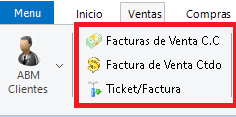

Sistema de Gestión Comercial
Acerca del Producto
Este sistema fue pensando para satisfacer las necesidades correspondientes a la
administración de los diferentes sectores de pequeñas
y medianas empresas, dando una solución óptima e integral que permitirá llevar a cabo las operaciones
necesarias para la fácil administración de ventas,
presupuestos, cobranzas, compras, órdenes de compras, pago a proveedores, control de stock, libro IVA
compras, libro IVA ventas, múltiples cajas,
libro de cheques de terceros, manejo de múltiples cuentas bancarias, administración de personal,
órdenes de producción y órdenes de trabajo (reparaciones / mano de obra).
Sus características principales son su facilidad de uso y la flexibilidad de adaptarse a las necesidades
de prácticamente cualquier empresa de cualquier rubro.
El sistema cuenta con una gran variedad de reportes y gráficos estadísticos útiles para la toma de
decisiones empresariales y la posibilidad de exportación en
diferentes formatos.
Gracias a la posibilidad de configurar diferentes usuarios con diferentes perfiles, el sistema permite
restringir la información solamente a los usuarios pertinentes
dependiendo del cargo y permisos según se haya decidido a nivel gerencial.
- Versión: 8.2.0.38
- Autor: Luis A. Roldán
- Fecha de Creación: 2003
- Última Actualización: 2022
If you have any questions that are beyond the scope of this help file, Please feel free to email via Item Support Page.
Requerimientos del Sistema
Consideraciones Técnicas
Soporte Técnico
Primeros Pasos
Sección sobre recomendaciones al usar el sistema por primera vez, configuraciones iniciales, ingreso de parámetros de la empresa y variables generales del sistema.
Ingresar al Sistema
Una vez instalado el sistema, usted podrá acceder desde el ícono en el escritorio. Al abrir la aplicación, se le solicitará nombre de usuario y contraseña.
Ingreselas y presione Aceptar. Así se verá la pantalla principal del Sistema:

Acercando el puntero del mouse al Menú desplegable se mostrará una sección con Acciones Rápidas, cuyas funciones son explicadas mas adelante:

Haciendo click con el mouse en el botón de Menú, se mostrarán las opciones de Usuario:

Login: Cierra la sesión del usuario actual y solicita nuevamente nombre de usuario y contraseña.
Usuario: Función sólo para administradores. Permite administrar los usuarios del sistema. Se explica con
mayor profundidad en la sección Usuarios.
Acerca de: Muestra una ventana con información sobre el sistema.
Cambiar password usuario actual: Muestra la siguiente ventana, donde permite cambiar la constraseña del
usuario que ha iniciado sesión en el sistema.

Videos tutoriales: Abre en el navegador un canal de YouTube con videos tutoriales sobre el uso del sistema.
Salir aplicación: Cierra el sistema.
Haciendo doble click en el fondo de la aplicación, aparecerá un menú para elegir una imagen y cambiarlo:

Por último, haciendo click en cualquiera de las solapas se mostrarán todas las herramientas relacionadas a la solapa seleccionada. Por ejemplo, al hacer click sobre la solapa Ventas se desplegará el siguiente menú:

Aspectos Generales

{kind=link}
Preguntas Frecuentes
En esta sección se detallan las preguntas más frecuentes de nuestros usuarios, algunas con videos en nuestro canal de YouTube donde explicamos paso a paso como resolver sus dudas respecto al uso del Sistema de Gestión.
Inicio
Stock
Ventas
Al hacer click en la solapa Ventas, se abrirá la siguiente sección con las herramientas relacionadas a administración de datos de Clientes, facturación y venta de productos de la empresa:

A continuación se describen las funcionalidades de las herramientas que aparecen en esta solapa.
Altas, Bajas y Modificaciones (ABM) de Clientes
Se accede desde el menú Ventas, opción ABM de Clientes.

Mediante esta opción se podrán registrar los datos de los clientes que serán utilizados en las demás operaciones. Aunque el sistema permite dejar opciones en blanco, siempre es conveniente ingresar la mayor cantidad de información posible, así su base de datos será más completa y de mayor calidad.
Datos principales:
En la primer solapa se detallan los datos principales del cliente, a saber:

Código: El sistema propone automáticamente un código de cliente.
Nombre: Nombre de fantasía de la empresa o nombre del cliente. Al llenar este campo y
presionar Enter,
se completarán automáticamente los campos Nombre Ampliado y Razó Social.
Razón Social: Por defecto el sistema cargará el mismo nombre ingresado recién, pero se puede
cambiar por la razón social del cliente según corresponda.
Domicilio Comercial: Ingrese aquí el domicilio comercial del cliente
Localidad: Pulsando en el botón Buscado o presionando Ctrl + Enter, podrá acceder a las
localidades cargadas en Datos Geográficos (para más información ver sección Primeros Pasos -> Datos
Geográficos).
Vendedor: Aquí se puede guardar el vendedor que habitualmente trabaja con este cliente. Los
vendedores serán cargados en Personal, que lo veremos más adelante.
Cobrador: Aquí se puede guardar el cobrador que habitualmente trabaja con este cliente. Los
cobradores serán cargados en Personal, que lo veremos más adelante.
Teléfonos: El sistema provee la posibilidad de guardar tres teléfonos diferentes: dos
teléfonos fijos y un teléfono celular.
Límite de crédito: Si el cliente tiene un límite de crédito se especifica aquí. Gracias a
esto, en la factura en
cuenta corriente saldrá un cartel si el cliente está excedido en el límite, sólo a modo informativo.
Datos Adicionales para Personas Únicas: Si el cliente es una Persona Única, en esta sección
podremos ingresar datos adicionales como Tipo de Documento y Número,
y su Fecha de Nacimiento.
Datos impositivos:
En esta segunda solapa se pueden cargar los Datos Impositivos del cliente:

Condición de IVA: Aquí se especifica si el cliente es Responsable Inscripto, Monotributista,
etc. Haciendo click sobre la pestaña se despliegan las
diferentes opciones. Éstas fueron cargadas en Tipos de Inscripción (ver Primeros Pasos -> Tipos de
Inscripción en IVA).
Nro. CUIT: Aquí se ingresa el número de CUIT del cliente.
Sucursal: Aquí se especifica a qué sucursal pertenece el cliente.
Fecha Ult. Compra: Al dar de alta al cliente, esta opción aparecerá deshabilitada, pero si
se desean ver los datos del cliente más adelante,
se mostrará aquí la fecha de la última venta realizada a este cliente.
Fecha de alta: Fecha en la que se ingresaron los datos por primera vez.
Zona: Aquí se ingresa la zona a la que pertenece. Las zonas fueron especificadas en Datos
Geográficos (ver Primeros Pasos -> Datos Geográficos).
Condiciones: según corresponda, el cliente emitirá Facturas y/o Remitos. Esta opción define
el comportamiento del cliente.
Usar Comp. para Facturar en Cta. Cte.: aquí se elige el comprobante que se utilizará para
facturarle.
Los comprobantes fueron definidos con anterioridad en Comprobantes (ver página 17).
Estado de la cuenta: Al momento del alta, el estado del cliente será activo. Cuando éste sea
dado de baja, su estado será inactivo.
Fecha del último pago: Será la última fecha donde se registró un pago por parte de este
cliente.
Al igual que Fecha Ult. Compra, estará deshabilitado al momento de darle de alta.
Condiciones de pago: Esta tabla permite ingresar todas las condiciones de pago que le
corresponden a este cliente.
Estas condiciones fueron cargadas en Condiciones de Pago (ver Primeros Pasos -> Condiciones de Pago).
Observaciones: El sistema le brinda este espacio para cargar información que necesite que no
fue contemplada en las opciones anteriores.
Configuración de Comprobantes:
En la tercer solapa, Comprobantes - Transporte - Abono plantilla, es posible configurar los comprobantes
que se utilizarán por defecto para este cliente:

Comprobante para Facturar en Cta. Cte: Se ingresa el comprobante usado por defecto usado en
Facturas de Cuenta Corriente para este Cliente.
Comprobante para Facturar de Contado: Se ingresa el comprobante usado por defecto usado en
Facturas de Contado para este Cliente.
Comprobante para Notas de Débito: Se ingresa el comprobante usado por defecto usado en Notas
de Débito para este Cliente.
Comprobante para Notas de Crédito: Se ingresa el comprobante usado por defecto usado en
Notas de Crédito para este Cliente.
Comprobante para Ticket: Se ingresa el comprobante usdao por defecto usado en Notas de
Débito para este Cliente.
Comprobante para Recibo: Se ingresa el comprobante usado por defecto en Tickets de Venta
Contado para este Cliente.
Transporte Habitual: En esta opción, puede elegir cuál es el transporte por defecto que
realiza las entregas a este Cliente.
El ingreso de transportes se detalla en otra sección.
Datos de Lugares de Recepción:
En la cuarta solapa, L.D.R., se ingresa los Lugares de Recepción del Cliente, en caso de que trabaje con
varios sucursales o depósitos:

 Primer
Registro
Primer
Registro
 Registro
Anterior
Registro
Anterior
 Siguiente
Registro
Siguiente
Registro
 Último
Registro
Último
Registro
 Agregar
Registro
Agregar
Registro
 Eliminar
Registro
Eliminar
Registro
 Editar Registro
Editar Registro
 Confirmar Datos del Nuevo Registro
Confirmar Datos del Nuevo Registro
 Cancelar
Ingreso de Nuevo Registro
Cancelar
Ingreso de Nuevo Registro
 Actualizar Lista de Registros
Actualizar Lista de Registros
De este modo, podemos recorrer los diferentes registros, en este caso, los diferentes lugares de recepción de este cliente. Si presionamos Agregar Registro, el navegador se comportará de la siguiente manera:

Los botones de la barra de navegación se habilitarán y también podremos editar los campos de Nombre,
Dirección, Código Postal y Localidad.
Además, a medida que completemos estos campos, se irán completando debajo en la tabla de Lugares de
Recepción.
Presione Confirmar o Cancelar para guardar o cancelar la operación. Si desea agregar un nuevo registro,
presione nuevamente Agregar registro,
si desea borrar un registro presione Eliminar Registro.
Si desea modificar un registro, haga un click sobre él en la tabla y presione Editar Registro Actual. El
navegador se comportará de la siguiente manera:

Listados
En esta solapa encontraremos un listado total de todos los clientes. Elija si quiere ver los clientes activos, dados de baja (inactivos), en gestión judicial o todos. También puede distinguir clientes por Sucursal, Categoría, Prestador, Vendedor, Tipo de Servicio, Grupo de Abono, Zona y Cobrador. Presione el botón Listar para confirmar las opciones seleccionadas y generar el listado de clientes. En la tabla inferior se mostrará la información.

Haciendo doble click sobre el cliente, se abrirán sus datos en la solapa Datos del Cliente. Desde Imprimir podrá visualizar una vista previa en formato imprimible de comportamiento similar al visto en Reportes (ver Primeros Pasos -> Aspectos Generales -> Reportes).
Garantes

Control de Morosidad

Órdenes de Trabajo

General (A Hacer)
En esta sección se describirán funcionalidades generales que comparten las ventanas relacionadas con la facturación, presupuestos, remitos, etc. Es recomendable leer esta sección antes de continuar con algunas de las funcionalidades, ya que en sus secciones correspondientes se hará referencia al contenido descrito a continuación.
Presupuestos
Se accede mediante el botón Presupuestos:

Mediante esta opción se pueden crear presupuestos a los diferentes clientes creados anteriormente. La pantalla se verá de la siguiente manera:
{kind=link}
Presione Agregar para crear un nuevo presupuesto. Con Enter o el mouse vaya navegando por los diferentes
campos del encabezado.
El sistema por defecto ingresará la fecha actual, la sucursal desde donde se está trabajando, el tipo de
comprobante y el número que le corresponde.
Igualmente estos datos pueden ser cambiados. El siguiente dato que deberá ingresar es el cliente, esto
puede hacerse de tres maneras diferentes:
- Presione el botón
 y busque
en la lista de clientes.
y busque
en la lista de clientes. - Presione Ctrl + Enter y también se le desplegará el listado de clientes.
- Si conoce el código del cliente, ingréselo directamente.
Con el botón Editar Cliente  ,
puede cambiar los datos del cliente particularmente para este presupuesto.
,
puede cambiar los datos del cliente particularmente para este presupuesto.
Con el botón Nuevo Cliente  ,
puede ingresar un nuevo cliente para este presupuesto.
Cualquiera de estos botones abrirá la siguiente ventana donde ingresar o modificar los datos del
cliente:
,
puede ingresar un nuevo cliente para este presupuesto.
Cualquiera de estos botones abrirá la siguiente ventana donde ingresar o modificar los datos del
cliente:

Con el botón Confirmar, crearemos un nuevo cliente o modificaremos los datos del cliente que
hayamos seleccionado y cerraremos la ventana.
El botón Cancelar anula la operación.
En el caso de Editar Cliente, la ventana tendrá un botón extra Guardar en Clientes que utilizará
los datos ingresados para guardar una nueva entrada en la lista
de Clientes en lugar de modificar los datos del cliente que hayamos seleccionado.
Al ingresar el cliente, Lugar de Recepción, Depósito y Condición de Venta se cargarán automáticamente
según lo que se haya cargado en el ABM de clientes.
Estos datos también se pueden modificar.
Por último, y con esto terminaríamos el encabezado del presupuesto, podemos cargar el Vendedor que realiza
la operación.
Luego, en la tabla se irán cargando uno a uno los artículos presupuestados. Para ello debe ingresar el
código de artículo,
puede hacerlo de la misma manera que cargó el código del cliente. Automáticamente se cargarán el nombre
del artículo, la unidad, el IVA y el precio.
Lo que queda sombreado en amarillo no puede ser modificado, pero tanto el nombre del artículo como su
precio pueden ser modificados.
Por último ingrese la cantidad deseada y, en caso de existir, el descuento. Con la tecla Tab que se
encuentra a la izquierda de su teclado,
podrá cargar el siguiente artículo.
Si elige (haciendo click) un artículo de la tabla y presione F11 podrá ver todos los movimientos de stock
de ese artículo.
También puede cargarse un descuento que será general para todos los artículos desde Dsto % que se
encuentra a la derecha inferior de la pantalla.
Detalles de Impuestos

El funcionamiento es muy similar a vistos anteriormente. Veamos los diferentes valores:
- Subtotal: Es el importe de todos los artículos presupuestados que serán gravados.
- Exento: Si existieran artículos exentos, aquí va el subtotal.
- Dsto: Este descuento es el que fue cargado en la solapa Detalles, muestra el porcentaje aplicado a Subtotal.
- Exento: Muestra el porcentaje de descuento aplicado a Exento.
- Total Neto: Compuesto de la suma de Subtotal y Exento menos los descuentos.
Por último se muestra el total de la operación, que surge del Total Neto más los impuestos detallados en la tabla.
Presione Confirmar para guardar la operación.
Listado de Presupuestos por Cliente
Remitos
Se acceden desde el botón Remitos.

{kind=link}
El ingreso de los datos en la cabecera es similar al visto en Presupuestos (ver Ventas -> Presupuestos).
Los datos adicionales que encontramos son:
Número de Factura: Al momento de ingresar el remito, este número estará deshabilitado, pero una vez
facturado, como veremos a continuación, aquí se registrará el número de la factura generada.
Nro de pedido: Por defecto 1, especifica la cantidad de entregas que involucran a este remito.
En la barra de herramientas encontramos el botón Anular Comprobante, éste permite anular el remito una vez
que fue confirmado y se activará la casilla de verificación Anulado.
La carga de los artículos es igual a lo visto en Presupuesto. Al presionar F11 sobre un artículo, se podrá
ver un listado de movimientos del mismo.
Detalles de Impuestos
El El detalle mostrado es igual al que hemos visto en Presupuestos
Facturación de Remito Individual

Facturación de Remitos Agrupados

Facturas de venta
En esta sección se describen las funcionalidades para realizar la facturación y fiscalización de las ventas de su negocio. Las herramientas descritas en las siguientes secciones se encuentran aquí:

- Facturacion de Venta en Cuenta Corriente.
- Facturacion de Venta al Contado.
- Ticket / Factura.
Facturacion en Cuenta Corriente
Mediante la opción Facturas de Venta C. C. se registra una venta en cuenta corriente generando el comprobante correspondiente, actualizando la cuenta corriente del cliente.

Para facturar el procedimiento es similar al visto en Presupuestos y en Remitos. Presione Agregar, se
ingresará la fecha actual y la sucursal.
El tipo de comprobante y el número no, ya que la facturación depende de la inscripción de IVA del cliente
y del comprobante configurado en ABM de clientes para
la facturación en cuenta corriente. Por lo tanto, al elegir el cliente, se carga automáticamente el tipo y
número de comprobante, junto con todos los datos correspondientes del cliente.
Estos datos pueden ser modificados como ya hemos visto.
Adicionalmente se pueden cargar el vendedor que está ejecutando la operación, el número de remito (si es
que hay un remito asociado) y la cantidad de entregas.
Con éstos se completan los datos del encabezado de la factura. Al pasar al detalle de los artículos, éste
ya no puede ser modificado.
Si hay un error, se debe cancelar la operación y empezar de nuevo.
La carga de los artículos se hace de igual manera que hemos hecho en los comprobantes anteriores, con una
variante:
puede leerse con el lector de código de barras el código del artículo y éste se carga automáticamente.
También, al igual que en los remitos, se puede cargar un descuento aplicable a todos los artículos.
Presionando F11 sobre un artículo podrá ver una consulta sobre los movimientos del artículo.
Detalles de Impuestos

Explicacion sobre sección Impuestos en facturacion cta cte.
Notas de Crédito y Débito
Desde la pantalla de Facturación en Cuenta Corriente también se pueden registrar las Notas de Crédito de
venta. Esta operación implica un incremento en el stock de la mercadería involucrada,
ya que se registra la devolución de mercadería por parte del cliente, por lo tanto, también se registra un
movimiento en su cuenta corriente a favor de él.
Para crearla se siguen los mismos pasos que en la facturación en cuenta corriente, pero en Tipo de
Comprobante se deberá elegir Nota de Crédito.
El resto de los datos se ingresan de igual manera. Al igual que las notas de crédito que vimos en Compras,
éstas deberán ser imputadas a las facturas correspondientes
desde Imputaciones (ver página 98). Si la nota de crédito es al contado, se deberá habilitar la opción NC
de Contado. De ser así, se habilitará la opción de
elegir la caja a la que corresponderá.
En este caso, esta nota no afectará su cuenta corriente, diferenciándose así de la nota de crédito en
cuenta corriente.
Las Notas de Débito por venta se cargan también desde esta opción. Éstas implican una disminución en el stock y un movimiento que agregará deuda en la cuenta corriente del cliente. Luego, se deberán imputar los recibos o notas de crédito (según corresponda) a estas notas de débito, desde el menú Ventas, opción Imputaciones (ver ).
Facturas de Venta al Contado
Se accede mediante la opción Factura de Venta Ctdo. Mediante esta opción se pueden registrar las ventas de contado y generar el comprobante correspondiente.

La carga de los datos del encabezado, de las solapas Detalles e Impuestos son iguales a las vistas en facturación en cuenta corriente. En este caso también se usa el lector de códigos de barra para la carga de los artículos. Y, como este tipo de operación requiere además manejo de valores, se agrega la solapa Valores (ver Pág. 11).
Detalle de Impuestos

Explicación sobre Impuestos para Facturas de venta ctdo.
Valores de la Venta

En esta sección se ingresan los montos y sus tipos de pago que el cliente utilizó para completar la
venta. Esto permite indicar que en una venta se utilizaron
distintos tipos de pago, cuáles fueron y qué monto corresponde a cada uno. La venta no puede completarse
hasta que los montos ingresados (Total Ingresado) equivalgan
a el total a pagar (Total de Vta) y el Resto sea cero.
Para comenzar a ingresar valores, primero debemos asegurarnos de que tenemos una caja seleccionada.
Hacemos click en el botón
debajo de Caja y seleccionamos
la caja donde se registrará la operación.
¡PRECAUCION!: Asegúrese de haber seleccionado la caja correcta. En
caso de haber ingresado una factura en una caja a la que
no correspondía, diríjase a la sección de Preguntas Frecuentes.
Luego, hacemos click en la celda de Id en la tabla debajo de Caja. Aparecerá nuevamente el botón
, al hacerle click se nos abrirá
una nueva ventana donde podremos elegir el método de pago.
Dependiendo del método de pago escogido, se habilitará la sección correspondiente a la derecha e
indicaremos los montos y detalles correspondientes.

Cuando finalicemos de ingresar los montos y el Resto de la venta esté en cero, podremos hacer click en Confirmar y guardar la factura y/o imprimirla.
Ticket / Factura
Permite generar un ticket genérico para una venta. Se accede mediante el botón Ticket/Factura.

Este comprobante tiene una cabecera simplificada, donde solo se ingresa Cliente, Vendedor y Tipo de
Comprobante.
Comparte con la Factura de Contado la sección de Valores. En esta sección se ingresan los montos y los
tipos de pago correspondientes a la venta.
Diríjase a la sección Facturación de Contado para una
descripción de cómo ingresar los montos.
Comandas
Control de Comprobantes no Impresos
Se accede dentro de la solapa Ventas, sección Listados, dentro del menú desplegable Relacionados a Comprobantes

Esta opción emite un listado de todos los comprobantes de ventas que fueron facturados pero no impresos. Para imprimirlos, seleccione uno y presione Marcar. Repita la operación hasta que haya marcado todos los comprobantes deseados y presione Imprimir.

Este proceso mostrará todas las vistas previas de las facturas listas para imprimir.
Notas de Venta
Herramienta para generar comprobantes de venta para el depósito que despachará una entrega. Se accede desde la sección Nota de Venta dentro de la solapa Ventas.

Se abrirá la siguiente ventana.

Hojas de Carga
Las Hojas de Carga permiten detallar una entrega. Se accede desde el botón Hoja de Carga.


Cobro a Clientes
Implica la cancelación de las facturas en cuenta corriente de los clientes. El sistema ofrece dos posibilidades detalladas a continuación.
Recibo de Cobro
Utilizado para cancelar facturas anteriores al cobro. Su funcionamiento es similar a las órdenes de
pago.
Se accede desde el botón Recibos de Cobro.

Se abrirá la siguiente ventana:

Presione Agregar, el sistema cargará la fecha actual, la sucursal, el tipo y número de comprobante. Estos datos igualmente pueden ser cambiados si es necesario. Con Enter vaya navegando entre los datos. El siguiente sería Cliente, ingrese su código o búsquelo desde el botón buscador o presionando Ctrl. + Enter. Por último se necesita ingresar el Importe Total para completar los datos del encabezado del recibo. Presione Fac. CC para ver las facturas pendientes de este cliente.

Para asignar pagos, se selecciona con botón derecho la factura y se arrastra a la tabla de la izquierda con botón izquierdo. En Total Aplicado se irán acumulando los importes de las facturas. En saldo a Cta., se van descontando las facturas aplicadas del total a pagar. Con respecto a la factura en la tabla derecha, pueden ocurrir dos cosas: si el saldo a cuenta es suficiente para saldarla por completo, la factura aparecerá con saldo cero. Si el saldo no alcanza, la factura mostrará el saldo actualizado según la resta entre el saldo a Cta. y el importe de la factura.
Valores
Esta sección está explicada en Primeros Pasos -> Valores.
Retenciones

Se ingresarán en esta tabla cada una de las retenciones que le correspondan al cliente, si es que la empresa es agente de retención. Los tipos de retenciones fueron cargados en Tipos de Retenciones (ver Primeros Pasos -> Tipos de Retenciones). En Total Retenido se va acumulando los importes ingresados. Verifique que el importe de la solapa Valores coincida con el importe real y presione Confirma para guardar los cambios.
Estos recibos pueden ser modificados una vez confirmada la operación. Hay que tener en cuenta que estos recibos no tienen que pertenecer a una caja cerrada, ya que no se pueden modificar los tipos de valores e importes. Para modificarlos, entonces, busque el comprobante presionando el botón Buscar, elíjalo y presione Modificar. Si se desean eliminar aplicaciones de la tabla de la izquierda, posiciónese sobre el registro elegido y presione Ctrl + Delete. Si se desean agregar aplicaciones, presione Fac.CC. para visualizar las facturas no saldadas y arrastre de la misma manera que ya hemos visto de la tabla de la derecha a la tabla de la izquierda. Presione Recalcular saldos para que se verifiquen los saldos correctamente. Presione Confirma para guardar los cambios.
Imputaciones
Esta opción se usa cuando el cliente tiene saldo a favor anterior a las facturas emitidas. Entonces, mediante Imputaciones podemos aplicarle el saldo a las facturas. El mecanismo es el mismo utilizado en Imputaciones a proveedores.

1º Ingrese el cliente. El sistema mostrará, en la tabla de la izquierda, todas las facturas pendientes. Acercando el mouse a una de las casillas superiores, aparecerá un botón de filtro. Al hacerle click, aparecerán opciones para filtrar las facturas pendientes mostradas en la tabla. Las facturas canceladas totalmente pueden verse activando la casilla de verificación Mostrar con saldo cero.

En la tabla de la derecha, el sistema mostrará los recibos de cobro o ajustes que componen el saldo a favor. Haciendo botón derecho sobre éstos, se puede ver el comprobante completo.

2º Arrastrar con botón izquierdo el recibo sobre la factura.

Si el importe del recibo es suficiente, como en el caso del ejemplo, el saldo de la factura quedará en cero y el del recibo quedará con saldo a favor, que puede ser aplicado a futuras facturas.
3º Presione Confirma para guardar los cambios. Pulse Imprimir o Imprimir detalle para ver el reporte de la operación. La diferencia entre éstos radica en que Imprimir detalle va a imprimir por factura todos los recibos que componen su pago.
Nota: El botón Ver C. Cte. refresca la visualización de la cuenta corriente del cliente. Por lo tanto, si en cualquier momento de la operación (antes de confirmar) presiona esta opción, la visualización volverá al punto de partida.
Cuentas Corrientes de Clientes
Se accede desde la solapa Ventas, botón Cta. Cte. de Clientes

Mediante ésta puede listar todos los movimientos en la cuenta corriente de un cliente determinado en un período determinado. Para ello, ingrese un cliente, un rango de fechas y presione Ver CC.

Ajustes
Se accede desde la solapa Ventas -> Otras Acciones -> Botón Ajustes Cta. Cte. de Clientes.

Mediante la opción Ajustes Cta. Cte. de Clientes, se pueden generar ajustes en la cuenta corriente.

- Presione Agregar. El sistema ingresará Fecha, Sucursal, Tipo y Número de Comprobante. Estos datos pueden ser modificados. Presione Enter para navegar entre ellos.
- Ingrese Cliente con el botón o ingresando el código.
- Ingrese el ajuste. Si desea agregarle deuda, elija Debe e ingrese el importe. Si desea disminuirle la deuda, elija Haber e ingrese el saldo. Estos ajuste pueden tener fecha de vencimiento, si es así, ingrésela en Fecha Vto.
- Ingrese el detalle que se mostrará en el resumen de cuenta corriente en Detalle, y alguna información adicional que necesite en Observaciones.
- Presione Confirma para guardar la operación.
Saldos
Sección para crear listados relacionados a los saldos de los clientes. Se encuentra en el panel más a la izquierda dentro de la división Listados.

Deuda del Cliente
Se accede desde la opción Saldos de Deudas Clientes, se listan todos los clientes con deuda.

Este listado puede ser filtrado por sucursal, por vendedor, estableciendo un importe mínimo y máximo de deuda. También puede ser filtrado por el estado del cliente y se puede establecer una fecha hasta donde se calcula la deuda.

Para generar el listado de deudas de clientes:
- Ingrese Fecha de corte (por defecto la fecha actual) hasta la que se buscaran deudas. Opcionalmente, puede chequear la caja Con Fecha Desde e indicar una fecha a partir de la cual se buscaran deudas.
- Ingrese Estado del cliente, Categoría y Zona.
- Ingrese Tipo de Venta, Sucursal,Código Postal, Cobrador, y Vendedor.
- Ingrese importe mínimo y máximo para la búsqueda.
- Presione Traer Saldos.

Saldos Mensuales